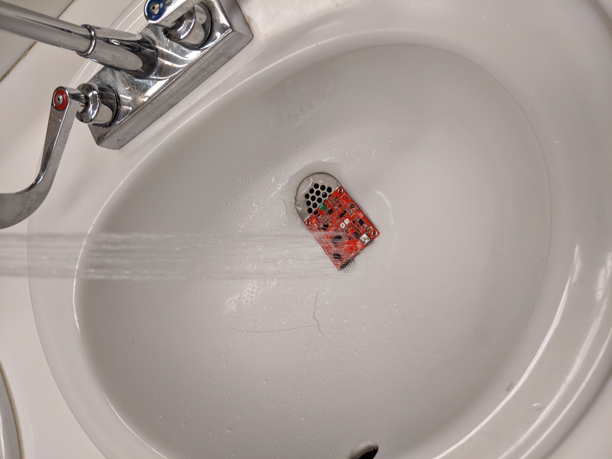

EENG 383
Guidelines for using the Ultrasonic Cleaner
You can use the Crest Ultrasonic cleaner to remove solder residue from printed circuit boards. An ultrasonic cleaner works by using ultrasound to rapidly agitate a fluid resulting in cavitation. An object placed in this fluid has its surface scrubbed by the agitated fluid and caveatting bubbles.It may seem counter-intuitive to drop a piece of electronics into a bath of (mostly) water, but as long as your circuit is not powered and you have not soldered the microphone on, you will be fine.
We have a Crest P500 Ultrasonic Cleaner in our lab. The lid comes off and is mainly used to keep heat in the tank when the cleaner is not in use. Inside the tank is a removable wire basket that holds the printed circuit boards being cleaned.

Step #1 - Set temperature
Once the ultrasonic cleaner is plugged in, you will use the "Select" button to setup the cleaner. Since this the ultrasonic cleaner has a heater, the first thing that you will want to to is set the temperature to 50°C. Do this by pressing the "Select" button until the Heater digits are flashing. Then use the up and down arrows to set the temperature to 5-°C.Step #2 - Set cleaning time
Next you will want to set the cleaning time to 2 minutes. Do this by pressing the "Select" button until the Sonic digital are flashing. Then use the up and down arrows to set the time to 2 minutes.Step #3 - Preheat tank
If the fluid (mostly water) in the tank is not already at 50°C, then you will need to start the process by pressing the "Heater" button. The decimal point LED in the two-digit display will flash to let you know the tank is being actively heated. The green LED on the "Heater" button will illuminate green to let you know that the heater function is enabled.If the fluid in the tank was at room temperature, then it will take about 15 minutes to heat up to the set-point temperature of 50°C.
Step #4 - Run the cleaner
Once the tank is at the correct operating temperature, then it's time for your board to take the plunge. Raise the basket out of the bath, place your board in an "upright" orientation (when viewed from above), and then lower your board in the bath.
Next, you will run the ultrasonic cleaner for 2 minutes by pressing the "Sonic" button. Both the "Sonic" and "Heater" green LEDs will illuminate letting you know that you have both functions enabled. The tank will make a particular high-pitched noise and the surface of the water will ripple while the ultrasonic waves are being applied to the fluid in the tank.

Step #5 - Cleaning your board
I have found that the ultrasonic cleaner works best when you reposition your board. I like to clean by board four time (at 2-minutes each), by rotating it 180°, then flipping it upside-down in two different orientations. Thus, my boards spend a total of 8-minutes being cleaned.After I am satisfied that the board is clean, I take it to the restroom and rinse it off with clean water. After this, I let the board dry completely before plugging it back in. If you have access to compressed air, you could give the board a good drying.
